This chapter presents a case study in the design of a “What-You-See-Is-What-You-Get” (or “WYSIWYG”) document editor called Lexi.1 We’ll see how design patterns capture solutions to design problems in Lexi and applications like it. By the end of this chapter you will have gained experience with eight patterns, learning them by example.
Figure 2.1 depicts Lexi’s user interface. A WYSIWYG representation of the document occupies the large rectangular area in the center. The document can mix text and graphics freely in a variety of formatting styles. Surrounding the document are the usual pull-down menus and scroll bars, plus a collection of page icons for jumping to a particular page in the document.
Figure 2.1: Lexi’s user interface
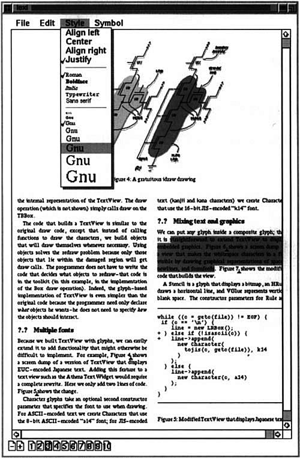
We will examine seven problems in Lexi’s design:
1. Document structure. The choice of internal representation for the document affects nearly every aspect of Lexi’s design. All editing, formatting, displaying, and textual analysis will require traversing the representation. The way we organize this information will impact the design of the rest of the application.
2. Formatting. How does Lexi actually arrange text and graphics into lines and columns? What objects are responsible for carrying out different formatting policies? How do these policies interact with the document’s internal representation?
3. Embellishing the user interface. Lexi’s user interface includes scroll bars, borders, and drop shadows that embellish the WYSIWYG document interface. Such embellishments are likely to change as Lexi’s user interface evolves. Hence it’s important to be able to add and remove embellishments easily without affecting the rest of the application.
4. Supporting multiple look-and-feel standards. Lexi should adapt easily to different look-and-feel standards such as Motif and Presentation Manager (PM) without major modification.
5. Supporting multiple window systems. Different look-and-feel standards are usually implemented on different window systems. Lexi’s design should be as independent of the window system as possible.
6. User operations. Users control Lexi through various user interfaces, including buttons and pull-down menus. The functionality behind these interfaces is scattered throughout the objects in the application. The challenge here is to provide a uniform mechanism both for accessing this scattered functionality and for undoing its effects.
7. Spelling checking and hyphenation. How does Lexi support analytical operations such as checking for misspelled words and determining hyphenation points? How can we minimize the number of classes we have to modify to add a new analytical operation?
We discuss these design problems in the sections that follow. Each problem has an associated set of goals plus constraints on how we achieve those goals. We explain the goals and constraints in detail before proposing a specific solution. The problem and its solution will illustrate one or more design patterns. The discussion for each problem will culminate in a brief introduction to the relevant patterns.
A document is ultimately just an arrangement of basic graphical elements such as characters, lines, polygons, and other shapes. These elements capture the total information content of the document. Yet an author often views these elements not in graphical terms but in terms of the document’s physical structure—lines, columns, figures, tables, and other substructures.2 In turn, these substructures have substructures of their own, and so on.
Lexi’s user interface should let users manipulate these substructures directly. For example, a user should be able to treat a diagram as a unit rather than as a collection of individual graphical primitives. The user should be able to refer to a table as a whole, not as an unstructured mass of text and graphics. That helps make the interface simple and intuitive. To give Lexi’s implementation similar qualities, we’ll choose an internal representation that matches the document’s physical structure.
In particular, the internal representation should support the following:
• Maintaining the document’s physical structure, that is, the arrangement of text and graphics into lines, columns, tables, etc.
• Generating and presenting the document visually.
• Mapping positions on the display to elements in the internal representation. This lets Lexi determine what the user is referring to when he points to something in the visual representation.
In addition to these goals are some constraints. First, we should treat text and graphics uniformly. The application’s interface lets the user embed text within graphics freely and vice versa. We should avoid treating graphics as a special case of text or text as a special case of graphics; otherwise we’ll end up with redundant formatting and manipulation mechanisms. One set of mechanisms should suffice for both text and graphics.
Second, our implementation shouldn’t have to distinguish between single elements and groups of elements in the internal representation. Lexi should be able to treat simple and complex elements uniformly, thereby allowing arbitrarily complex documents. The tenth element in line five of column two, for instance, could be a single character or an intricate diagram with many subelements. As long as we know this element can draw itself and specify its dimensions, its complexity has no bearing on how and where it should appear on the page.
Opposing the second constraint, however, is the need to analyze the text for such things as spelling errors and potential hyphenation points. Often we don’t care whether the element of a line is a simple or complex object. But sometimes an analysis depends on the objects being analyzed. It makes little sense, for example, to check the spelling of a polygon or to hyphenate it. The internal representation’s design should take this and other potentially conflicting constraints into account.
A common way to represent hierarchically structured information is through a technique called recursive composition, which entails building increasingly complex elements out of simpler ones. Recursive composition gives us a way to compose a document out of simple graphical elements. As a first step, we can tile a set of characters and graphics from left to right to form a line in the document. Then multiple lines can be arranged to form a column, multiple columns can form a page, and so on (see Figure 2.2).
Figure 2.2: Recursive composition of text and graphics
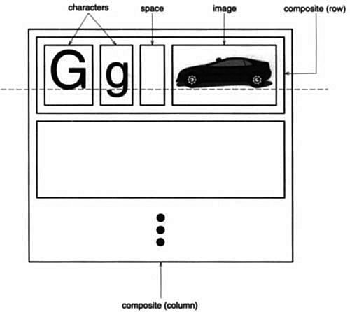
We can represent this physical structure by devoting an object to each important element. That includes not just the visible elements like the characters and graphics but the invisible, structural elements as well—the lines and the column. The result is the object structure shown in Figure 2.3.
Figure 2.3: Object structure for recursive composition of text and graphics
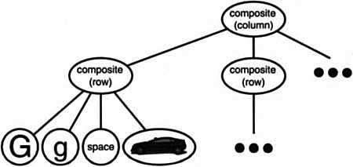
By using an object for each character and graphical element in the document, we promote flexibility at the finest levels of Lexi’s design. We can treat text and graphics uniformly with respect to how they are drawn, formatted, and embedded within each other. We can extend Lexi to support new character sets without disturbing other functionality. Lexi’s object structure mimics the document’s physical structure.
This approach has two important implications. The first is obvious: The objects need corresponding classes. The second implication, which maybe less obvious, is that these classes must have compatible interfaces, because we want to treat the objects uniformly. The way to make interfaces compatible in a language like C++ is to relate the classes through inheritance.
We’ll define a Glyph abstract class for all objects that can appear in a document structure.3 Its subclasses define both primitive graphical elements (like characters and images) and structural elements (like rows and columns). Figure 2.4 depicts a representative part of the Glyph class hierarchy, and Table 2.1 presents the basic glyph interface in more detail using C++ notation.4
Figure 2.4: Partial Glyph class hierarchy
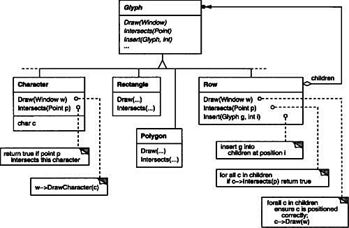
Table 2.1: Basic glyph interface
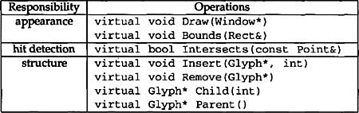
Glyphs have three basic responsibilities. They know (1) how to draw themselves, (2) what space they occupy, and (3) their children and parent.
Glyph subclasses redefine the Draw operation to render themselves onto a window. They are passed a reference to a Window object in the call to Draw. The Window class defines graphics operations for rendering text and basic shapes in a window on the screen. A Rectangle subclass of Glyph might redefine Draw as follows:
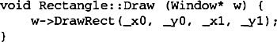
where _x0, _y0, _x1, and _y1 are data members of Rectangle that define two opposing corners of the rectangle. DrawRect is the Window operation that makes the rectangle appear on the screen.
A parent glyph often needs to know how much space a child glyph occupies, for example, to arrange it and other glyphs in a line so that none overlaps (as shown in Figure 2.2). The Bounds operation returns the rectangular area that the glyph occupies. It returns the opposite corners of the smallest rectangle that contains the glyph. Glyph subclasses redefine this operation to return the rectangular area in which they draw.
The Intersects operation returns whether a specified point intersects the glyph. Whenever the user clicks somewhere in the document, Lexi calls this operation to determine which glyph or glyph structure is under the mouse. The Rectangle class redefines this operation to compute the intersection of the rectangle and the given point.
Because glyphs can have children, we need a common interface to add, remove, and access those children. For example, a Row’s children are the glyphs it arranges into a row. The Insert operation inserts a glyph at a position specified by an integer index.5 The Remove operation removes a specified glyph if it is indeed a child.
The Child operation returns the child (if any) at the given index. Glyphs like Row that can have children should use Child internally instead of accessing the child data structure directly. That way you won’t have to modify operations like Draw that iterate through the children when you change the data structure from, say, an array to a linked list. Similarly, Parent provides a standard interface to the glyph’s parent, if any. Glyphs in Lexi store a reference to their parent, and their Parent operation simply returns this reference.
Recursive composition is good for more than just documents. We can use it to represent any potentially complex, hierarchical structure. The Composite (163) pattern captures the essence of recursive composition in object-oriented terms. Now would be a good time to turn to that pattern and study it, referring back to this scenario as needed.
We’ve settled on a way to represent the document’s physical structure. Next, we need to figure out how to construct a particular physical structure, one that corresponds to a properly formatted document. Representation and formatting are distinct: The ability to capture the document’s physical structure doesn’t tell us how to arrive at a particular structure. This responsibility rests mostly on Lexi. It must break text into lines, lines into columns, and so on, taking into account the user’s higher-level desires. For example, the user might want to vary margin widths, indentation, and tabulation; single or double space; and probably many other formatting constraints.6 Lexi’s formatting algorithm must take all of these into account.
By the way, we’ll restrict “formatting” to mean breaking a collection of glyphs into lines. In fact, we’ll use the terms “formatting” and “linebreaking” interchangeably. The techniques we’ll discuss apply equally well to breaking lines into columns and to breaking columns into pages.
The formatting process, with all its constraints and details, isn’t easy to automate. There are many approaches to the problem, and people have come up with a variety of formatting algorithms with different strengths and weaknesses. Because Lexi is a WYSIWYG editor, an important trade-off to consider is the balance between formatting quality and formatting speed. We want generally good response from the editor without sacrificing how good the document looks. This trade-off is subject to many factors, not all of which can be ascertained at compile-time. For example, the user might tolerate slightly slower response in exchange for better formatting. That trade-off might make an entirely different formatting algorithm more appropriate than the current one. Another, more implementation-driven trade-off balances formatting speed and storage requirements: It may be possible to decrease formatting time by caching more information.
Because formatting algorithms tend to be complex, it’s also desirable to keep them well-contained or—better yet—completely independent of the document structure. Ideally we could add a new kind of Glyph subclass without regard to the formatting algorithm. Conversely, adding a new formatting algorithm shouldn’t require modifying existing glyphs.
These characteristics suggest we should design Lexi so that it’s easy to change the formatting algorithm at least at compile-time, if not at run-time as well. We can isolate the algorithm and make it easily replaceable at the same time by encapsulating it in an object. More specifically, we’ll define a separate class hierarchy for objects that encapsulate formatting algorithms. The root of the hierarchy will define an interface that supports a wide range of formatting algorithms, and each subclass will implement the interface to carry out a particular algorithm. Then we can introduce a Glyph subclass that will structure its children automatically using a given algorithm object.
We’ll define a Compositor class for objects that can encapsulate a formatting algorithm. The interface (Table 2.2) lets the compositor know what glyphs to format and when to do the formatting. The glyphs it formats are the children of a special Glyph subclass called Composition. A composition gets an instance of a Compositor subclass (specialized for a particular linebreaking algorithm) when it is created, and it tells the compositor to Compose its glyphs when necessary, for example, when the user changes a document. Figure 2.5 depicts the relationships between the Composition and Compositor classes.
Table 2.2: Basic compositor interface
Figure 2.5: Composition and Compositor class relationships
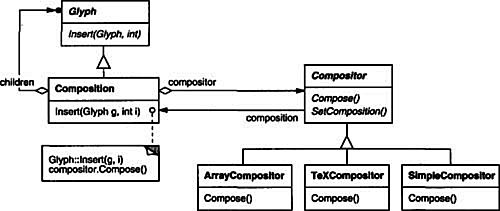
An unformatted Composition object contains only the visible glyphs that make up the document’s basic content. It doesn’t contain glyphs that determine the document’s physical structure, such as Row and Column. The composition is in this state just after it’s created and initialized with the glyphs it should format. When the composition needs formatting, it calls its compositor’s Compose operation. The compositor in turn iterates through the composition’s children and inserts new Row and Column glyphs according to its linebreaking algorithm.7 Figure 2.6 shows the resulting object structure. Glyphs that the compositor created and inserted into the object structure appear with gray backgrounds in the figure.
Figure 2.6: Object structure reflecting compositor-directed linebreaking
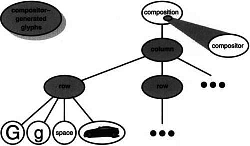
Each Compositor subclass can implement a different linebreaking algorithm. For example, a SimpleCompositor might do a quick pass without regard for such esoterica as the document’s “color.” Good color means having an even distribution of text and whitespace. A TeXCompositor would implement the full TEX algorithm [Knu84], which takes things like color into account in exchange for longer formatting times.
The Compositor-Composition class split ensures a strong separation between code that supports the document’s physical structure and the code for different formatting algorithms. We can add new Compositor subclasses without touching the glyph classes, and vice versa. In fact, we can change the linebreaking algorithm at run-time by adding a single SetCompositor operation to Composition’s basic glyph interface.
Encapsulating an algorithm in an object is the intent of the Strategy (315) pattern. The key participants in the pattern are Strategy objects (which encapsulate different algorithms) and the context in which they operate. Compositors are strategies; they encapsulate different formatting algorithms. A composition is the context for a compositor strategy.
The key to applying the Strategy pattern is designing interfaces for the strategy and its context that are general enough to support a range of algorithms. You shouldn’t have to change the strategy or context interface to support a new algorithm. In our example, the basic Glyph interface’s support for child access, insertion, and removal is general enough to let Compositor subclasses change the document’s physical structure, regardless of the algorithm they use to do it. Likewise, the Compositor interface gives compositions whatever they need to initiate formatting.
We consider two embellishments in Lexi’s user interface. The first adds a border around the text editing area to demarcate the page of text. The second adds scroll bars that let the user view different parts of the page. To make it easy to add and remove these embellishments (especially at run-time), we shouldn’t use inheritance to add them to the user interface. We achieve the most flexibility if other user interface objects don’t even know the embellishments are there. That will let us add and remove the embellishments without changing other classes.
From a programming point of view, embellishing the user interface involves extending existing code. Using inheritance to do such extension precludes rearranging embellishments at run-time, but an equally serious problem is the explosion of classes that can result from an inheritance-based approach.
We could add a border to Composition by subclassing it to yield a BorderedComposition class. Or we could add a scrolling interface in the same way to yield a Scrollable-Composition. If we want both scroll bars and a border, we might produce a Bordered-ScrollableComposition, and so forth. In the extreme, we end up with a class for every possible combination of embellishments, a solution that quickly becomes unworkable as the variety of embellishments grows.
Object composition offers a potentially more workable and flexible extension mechanism. But what objects do we compose? Since we know we’re embellishing an existing glyph, we could make the embellishment itself an object (say, an instance of class Border). That gives us two candidates for composition, the glyph and the border. The next step is to decide who composes whom. We could have the border contain the glyph, which makes sense given that the border will surround the glyph on the screen. Or we could do the opposite—put the border into the glyph—but then we must make modifications to the corresponding Glyph subclass to make it aware of the border. Our first choice, composing the glyph in the border, keeps the border-drawing code entirely in the Border class, leaving other classes alone.
What does the Border class look like? The fact that borders have an appearance suggests they should actually be glyphs; that is, Border should be a subclass of Glyph. But there’s a more compelling reason for doing this: Clients shouldn’t care whether glyphs have borders or not. They should treat glyphs uniformly. When clients tell a plain, unbordered glyph to draw itself, it should do so without embellishment. If that glyph is composed in a border, clients shouldn’t have to treat the border containing the glyph any differently; they just tell it to draw itself as they told the plain glyph before. This implies that the Border interface matches the Glyph interface. We subclass Border from Glyph to guarantee this relationship.
All this leads us to the concept of transparent enclosure, which combines the notions of (1) single-child (or single-component) composition and (2) compatible interfaces. Clients generally can’t tell whether they’re dealing with the component or its enclosure (i.e., the child’s parent), especially if the enclosure simply delegates all its operations to its component. But the enclosure can also augment the component’s behavior by doing work of its own before and/or after delegating an operation. The enclosure can also effectively add state to the component. We’ll see how next.
We can apply the concept of transparent enclosure to all glyphs that embellish other glyphs. To make this concept concrete, we’ll define a subclass of Glyph called MonoGlyph to serve as an abstract class for “embellishment glyphs,” like Border (see Figure 2.7). MonoGlyph stores a reference to a component and forwards all requests to it.
Figure 2.7: MonoGlyph class relationships
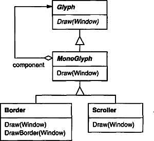
That makes MonoGlyph totally transparent to clients by default. For example, MonoGlyph implements the Draw operation like this:
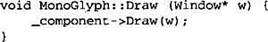
MonoGlyph subclasses reimplement at least one of these forwarding operations. Border::Draw, for instance, first invokes the parent class operation MonoGlyph::Draw on the component to let the component do its part—that is, draw everything but the border. Then Border::Draw draws the border by calling a private operation called DrawBorder, the details of which we’ll omit:
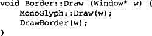
Notice how Border::Draw effectively extends the parent class operation to draw the border. This is in contrast to merely replacing the parent class operation, which would omit the call to MonoGlyph::Draw.
Another MonoGlyph subclass appears in Figure 2.7. Scroller is a MonoGlyph that draws its component in different locations based on the positions of two scroll bars, which it adds as embellishments. When Scroller draws its component, it tells the graphics system to clip to its bounds. Clipping parts of the component that are scrolled out of view keeps them from appearing on the screen.
Now we have all the pieces we need to add a border and a scrolling interface to Lexi’s text editing area. We compose the existing Composition instance in a Scroller instance to add the scrolling interface, and we compose that in a Border instance. The resulting object structure appears in Figure 2.8.
Figure 2.8: Embellished object structure
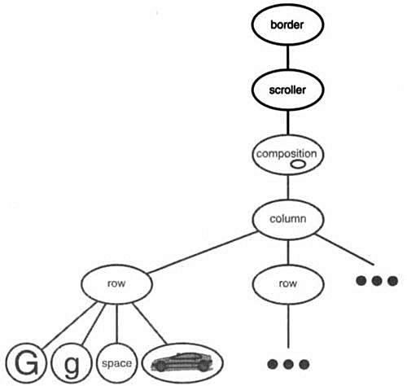
Note that we can reverse the order of composition, putting the bordered composition into the Scroller instance. In that case the border would be scrolled along with the text, which may or may not be desirable. The point is, transparent enclosure makes it easy to experiment with different alternatives, and it keeps clients free of embellishment code.
Note also how the border composes one glyph, not two or more. This is unlike compositions we’ve defined so far, in which parent objects were allowed to have arbitrarily many children. Here, putting a border around something implies that “something” is singular. We could assign a meaning to embellishing more than one object at a time, but then we’d have to mix many kinds of composition in with the notion of embellishment: row embellishment, column embellishment, and so forth. That won’t help us, since we already have classes to do those kinds of compositions. So it’s better to use existing classes for composition and add new classes to embellish the result. Keeping embellishment independent of other kinds of composition both simplifies the embellishment classes and reduces their number. It also keeps us from replicating existing composition functionality.
The Decorator (175) pattern captures class and object relationships that support embellishment by transparent enclosure. The term “embellishment” actually has broader meaning than what we’ve considered here. In the Decorator pattern, embellishment refers to anything that adds responsibilities to an object. We can think for example of embellishing an abstract syntax tree with semantic actions, a finite state automaton with new transitions, or a network of persistent objects with attribute tags. Decorator generalizes the approach we’ve used in Lexi to make it more widely applicable.
Achieving portability across hardware and software platforms is a major problem in system design. Retargeting Lexi to a new platform shouldn’t require a major overhaul, or it wouldn’t be worth retargeting. We should make porting as easy as possible.
One obstacle to portability is the diversity of look-and-feel standards, which are intended to enforce uniformity between applications. These standards define guidelines for how applications appear and react to the user. While existing standards aren’t that different from each other, people certainly won’t confuse one for the other—Motif applications don’t look and feel exactly like their counterparts on other platforms, and vice versa. An application that runs on more than one platform must conform to the user interface style guide on each platform.
Our design goals are to make Lexi conform to multiple existing look-and-feel standards and to make it easy to add support for new standards as they (invariably) emerge. We also want our design to support the ultimate in flexibility: changing Lexi’s look and feel at run-time.
Everything we see and interact with in Lexi’s user interface is a glyph composed in other, invisible glyphs like Row and Column. The invisible glyphs compose visible ones like Button and Character and lay them out properly. Style guides have much to say about the look and feel of so-called “widgets,” another term for visible glyphs like buttons, scroll bars, and menus that act as controlling elements in a user interface. Widgets might use simpler glyphs such as characters, circles, rectangles, and polygons to present data.
We’ll assume we have two sets of widget glyph classes with which to implement multiple look-and-feel standards:
1. A set of abstract Glyph subclasses for each category of widget glyph. For example, an abstract class ScrollBar will augment the basic glyph interface to add general scrolling operations; Button is an abstract class that adds button-oriented operations; and so on.
2. A set of concrete subclasses for each abstract subclass that implement different look-and-feel standards. For example, ScrollBar might have Motif ScrollBar and PMScrollBar subclasses that implement Motif and Presentation Manager-style scroll bars, respectively.
Lexi must distinguish between widget glyphs for different look-and-feel styles. For example, when Lexi needs to put a button in its interface, it must instantiate a Glyph subclass for the right style of button (MotifButton, PMButton, MacButton, etc.).
It’s clear that Lexi’s implementation can’t do this directly, say, using a constructor call in C++. That would hard-code the button of a particular style, making it impossible to select the style at run-time. We’d also have to track down and change every such constructor call to port Lexi to another platform. And buttons are only one of a variety of widgets in Lexi’s user interface. Littering our code with constructor calls to specific look-and-feel classes yields a maintenance nightmare—miss just one, and you could end up with a Motif menu in the middle of your Mac application.
Lexi needs a way to determine the look-and-feel standard that’s being targeted in order to create the appropriate widgets. Not only must we avoid making explicit constructor calls; we must also be able to replace an entire widget set easily. We can achieve both by abstracting the process of object creation. An example will illustrate what we mean.
Normally we might create an instance of a Motif scroll bar glyph with the following C++ code:
ScrollBar* sb = new MotifScrollBar;
This is the kind of code to avoid if you want to minimize Lexi’s look-and-feel dependencies. But suppose we initialize sb as follows:
ScrollBar* sb = guiFactory->CreateScrollBar();
where guiFactory is an instance of a MotifFactory class. CreateScrollBar returns a new instance of the proper ScrollBar subclass for the look and feel desired, Motif in this case. As far as clients are concerned, the effect is the same as calling the MotifScrollBar constructor directly. But there’s a crucial difference: There’s no longer anything in the code that mentions Motif by name. The guiFactory object abstracts the process of creating not just Motif scroll bars but scroll bars for any look-and-feel standard. And guiFactory isn’t limited to producing scroll bars. It can manufacture a full range of widget glyphs, including scroll bars, buttons, entry fields, menus, and so forth.
All this is possible because MotifFactory is a subclass of GUIFactory, an abstract class that defines a general interface for creating widget glyphs. It includes operations like CreateScrollBar and CreateButton for instantiating different kinds of widget glyphs. Subclasses of GUIFactory implement these operations to return glyphs such as MotifScrollBar and PMButton that implement a particular look and feel. Figure 2.9 shows the resulting class hierarchy for guiFactory objects.
Figure 2.9: GUIFactory class hierarchy
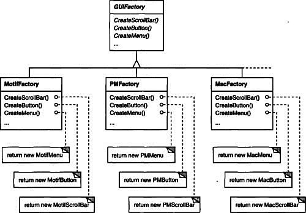
We say that factories create product objects. Moreover, the products that a factory produces are related to one another; in this case, the products are all widgets for the same look and feel. Figure 2.10 shows some of the product classes needed to make factories work for widget glyphs.
Figure 2.10: Abstract product classes and concrete subclasses
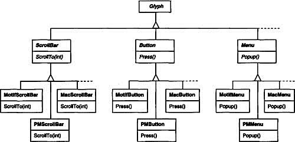
The last question we have to answer is, Where does the GUIFactory instance come from? The answer is, Anywhere that’s convenient. The variable guiFactory could be a global, a static member of a well-known class, or even a local variable if the entire user interface is created within one class or function. There’s even a design pattern, Singleton (127), for managing well-known, one-of-a-kind objects like this. The important thing, though, is to initialize guiFactory at a point in the program before it’s ever used to create widgets but after it’s clear which look and feel is desired.
If the look and feel is known at compile-time, then guiFactory can be initialized with a simple assignment of a new factory instance at the beginning of the program:
GUIFactory* guiFactory = new MotifFactory;
If the user can specify the look and feel with a string name at startup time, then the code to create the factory might be
There are more sophisticated ways to select the factory at run-time. For example, you could maintain a registry that maps strings to factory objects. That lets you register instances of new factory subclasses without modifying existing code, as the preceding approach requires. And you don’t have to link all platform-specific factories into the application. That’s important, because it might not be possible to link a MotifFactory on a platform that doesn’t support Motif.
But the point is that once we’ve configured the application with the right factory object, its look and feel is set from then on. If we change our minds, we can reinitialize guiFactory with a factory for a different look and feel and then reconstruct the interface. Regardless of how and when we decide to initialize guiFactory, we know that once we do, the application can create the appropriate look and feel without modification.
Factories and products are the key participants in the Abstract Factory (87) pattern. This pattern captures how to create families of related product objects without instantiating classes directly. It’s most appropriate when the number and general kinds of product objects stay constant, and there are differences in specific product families. We choose between families by instantiating a particular concrete factory and using it consistently to create products thereafter. We can also swap entire families of products by replacing the concrete factory with an instance of a different one. The Abstract Factory pattern’s emphasis on families of products distinguishes it from other creational patterns, which involve only one kind of product object.
Look and feel is just one of many portability issues. Another is the windowing environment in which Lexi runs. A platform’s window system creates the illusion of multiple overlapping windows on a bitmapped display. It manages screen space for windows and routes input to them from the keyboard and mouse. Several important and largely incompatible window systems exist today (e.g., Macintosh, Presentation Manager, Windows, X). We’d like Lexi to run on as many of them as possible for exactly the same reasons we support multiple look-and-feel standards.
At first glance this may look like another opportunity to apply the Abstract Factory pattern. But the constraints for window system portability differ significantly from those for look-and-feel independence.
In applying the Abstract Factory pattern, we assumed we would define the concrete widget glyph classes for each look-and-feel standard. That meant we could derive each concrete product for a particular standard (e.g., MotifScrollBar and MacScrollBar) from an abstract product class (e.g., ScrollBar). But suppose we already have several class hierarchies from different vendors, one for each look-and-feel standard. Of course, it’s highly unlikely these hierarchies are compatible in any way. Hence we won’t have a common abstract product class for each kind of widget (ScrollBar, Button, Menu, etc.)—and the Abstract Factory pattern won’t work without those crucial classes. We have to make the different widget hierarchies adhere to a common set of abstract product interfaces. Only then could we declare the Create. . . operations properly in our abstract factory’s interface.
We solved this problem for widgets by developing our own abstract and concrete product classes. Now we’re faced with a similar problem when we try to make Lexi work on existing window systems; namely, different window systems have incompatible programming interfaces. Things are a bit tougher this time, though, because we can’t afford to implement our own nonstandard window system.
But there’s a saving grace. Like look-and-feel standards, window system interfaces aren’t radically different from one another, because all window systems do generally the same thing. We need a uniform set of windowing abstractions that lets us take different window system implementations and slide any one of them under a common interface.
In Section 2.2 we introduced a Window class for displaying a glyph or glyph structure on the display. We didn’t specify the window system that this object worked with, because the truth is that it doesn’t come from any particular window system. The Window class encapsulates the things windows tend to do across window systems:
• They provide operations for drawing basic geometric shapes.
• They can iconify and de-iconify themselves.
• They can (re)draw their contents on demand, for example, when they are deiconified or when an overlapped and obscured portion of their screen space is exposed.
The Window class must span the functionality of windows from different window systems. Let’s consider two extreme philosophies:
1. Intersection of functionality. The Window class interface provides only functionality that’s common to all window systems. The problem with this approach is that our Window interface winds up being only as powerful as the least capable window system. We can’t take advantage of more advanced features even if most (but not all) window systems support them.
2. Union of functionality. Create an interface that incorporates the capabilities of all existing systems. The trouble here is that the resulting interface may well be huge and incoherent. Besides, we’ll have to change it (and Lexi, which depends on it) anytime a vendor revises its window system interface.
Neither extreme is a viable solution, so our design will fall somewhere between the two. The Window class will provide a convenient interface that supports the most popular windowing features. Because Lexi will deal with this class directly, the Window class must also support the things Lexi knows about, namely, glyphs. That means Window’s interface must include a basic set of graphics operations that lets glyphs draw themselves in the window. Table 2.3 gives a sampling of the operations in the Window class interface.
Table 2.3: Window class interface
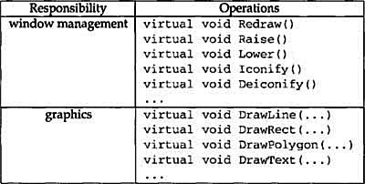
Window is an abstract class. Concrete subclasses of Window support the different kinds of windows that users deal with. For example, application windows, icons, and warning dialogs are all windows, but they have somewhat different behaviors. So we can define subclasses like ApplicationWindow, Icon Window, and DialogWindow to capture these differences. The resulting class hierarchy gives applications like Lexi a uniform and intuitive windowing abstraction, one that doesn’t depend on any particular vendor’s window system:
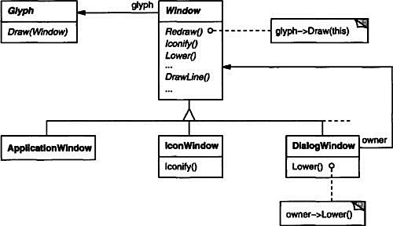
Now that we’ve defined a window interface for Lexi to work with, where does the real platform-specific window come in? If we’re not implementing our own window system, then at some point our window abstraction must be implemented in terms of what the target window system provides. So where does that implementation live?
One approach is to implement multiple versions of the Window class and its subclasses, one version for each windowing platform. We’d have to choose the version to use when we build Lexi for a given platform. But imagine the maintenance headaches we’d have keeping track of multiple classes, all named “Window” but each implemented on a different window system. Alternatively, we could create implementation-specific subclasses of each class in the Window hierarchy—and end up with another subclass explosion problem like the one we had trying to add embellishments. Both of these alternatives have another drawback: Neither gives us the flexibility to change the window system we use after we’ve compiled the program. So we’ll have to keep several different executables around as well.
Neither alternative is very appealing, but what else can we do? The same thing we did for formatting and embellishment, namely, encapsulate the concept that varies. What varies in this case is the window system implementation. If we encapsulate a window system’s functionality in an object, then we can implement our Window class and subclasses in terms of that object’s interface. Moreover, if that interface can serve all the window systems we’re interested in, then we won’t have to change Window or any of its subclasses to support different window systems. We can configure window objects to the window system we want simply by passing them the right window system-encapsulating object. We can even configure the window at run-time.
We’ll define a separate WindowImp class hierarchy in which to hide different window system implementations. WindowImp is an abstract class for objects that encapsulate window system-dependent code. To make Lexi work on a particular window system, we configure each window object with an instance of a WindowImp subclass for that system. The following diagram shows the relationship between the Window and WindowImp hierarchies:
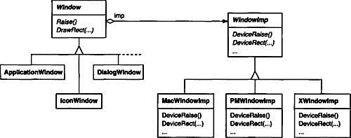
By hiding the implementations in WindowImp classes, we avoid polluting the Window classes with window system dependencies, which keeps the Window class hierarchy comparatively small and stable. Meanwhile we can easily extend the implementation hierarchy to support new window systems.
Subclasses of WindowImp convert requests into window system-specific operations. Consider the example we used in Section 2.2. We defined the Rectangle::Draw in terms of the DrawRect operation on the Window instance:
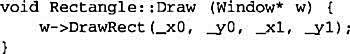
The default implementation of DrawRect uses the abstract operation for drawing rectangles declared by WindowImp:
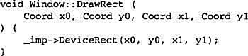
where _imp is a member variable of Window that stores the WindowImp with which the Window is configured. The window implementation is defined by the instance of the WindowImp subclass that _imp points to. For an XWindowImp (that is, a WindowImp subclass for the X Window System), the DeviceRect’s implementation might look like
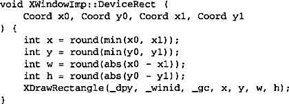
DeviceRect is defined like this because XDrawRectangle (the X interface for drawing a rectangle) defines a rectangle in terms of its lower left corner, its width, and its height. DeviceRect must compute these values from those supplied. First it ascertains the lower left corner (since (x0, y0) might be any one of the rectangle’s four corners) and then calculates the width and height.
PMWindowImp (a subclass of WindowImp for Presentation Manager) would define DeviceRect differently:
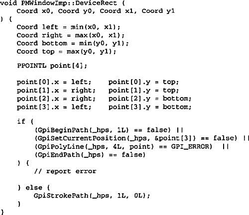
Why is this so different from the X version? Well, PM doesn’t have an operation for drawing rectangles explicitly as X does. Instead, PM has a more general interface for specifying vertices of multisegment shapes (called a path) and for outlining or filling the area they enclose.
PM’s implementation of DeviceRect is obviously quite different from X’s, but that doesn’t matter. WindowImp hides variations in window system interfaces behind a potentially large but stable interface. That lets Window subclass writers focus on the window abstraction and not on window system details. It also lets us add support for new window systems without disturbing the Window classes.
A key issue we haven’t addressed is how a window gets configured with the proper WindowImp subclass in the first place. Stated another way, when does _imp get initialized, and who knows what window system (and consequently which WindowImp subclass) is in use? The window will need some kind of WindowImp before it can do anything interesting.
There are several possibilities, but we’ll focus on one that uses the Abstract Factory (87) pattern. We can define an abstract factory class WindowSystemFactory that provides an interface for creating different kinds of window system-dependent implementation objects:
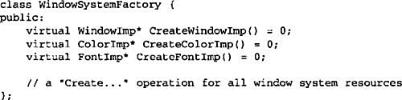
Now we can define a concrete factory for each window system:
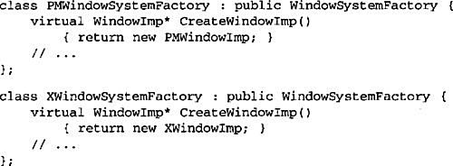
The Window base class constructor can use the WindowSystemFactory interface to initialize the _imp member with the WindowImp that’s right for the window system:
The windowSystemFactory variable is a well-known instance of a WindowSystemFactory subclass, akin to the well-known guiFactory variable defining the look and feel. The windowSystemFactory variable can be initialized in the same way.
The WindowImp class defines an interface to common window system facilities, but its design is driven by different constraints than Window’s interface. Application programmers won’t deal with WindowImp’s interface directly; they only deal with Window objects. So WindowImp’s interface needn’t match the application programmer’s view of the world, as was our concern in the design of the Window class hierarchy and interface. WindowImp’s interface can more closely reflect what window systems actually provide, warts and all. It can be biased toward either an intersection or a union of functionality approach, whichever suits the target window systems best.
The important thing to realize is that Window’s interface caters to the applications programmer, while WindowImp caters to window systems. Separating windowing functionality into Window and WindowImp hierarchies lets us implement and specialize these interfaces independently. Objects from these hierarchies cooperate to let Lexi work without modification on multiple window systems.
The relationship between Window and WindowImp is an example of the Bridge (151) pattern. The intent behind Bridge is to allow separate class hierarchies to work together even as they evolve independently. Our design criteria led us to create two separate class hierarchies, one that supports the logical notion of windows, and another for capturing different implementations of windows. The Bridge pattern lets us maintain and enhance our logical windowing abstractions without touching window system-dependent code, and vice versa.
Some of Lexi’s functionality is available through the document’s WYSIWYG representation. You enter and delete text, move the insertion point, and select ranges of text by pointing, clicking, and typing directly in the document. Other functionality is accessed indirectly through user operations in Lexi’s pull-down menus, buttons, and keyboard accelerators. The functionality includes operations for
• creating a new document,
• opening, saving, and printing an existing document,
• cutting selected text out of the document and pasting it back in,
• changing the font and style of selected text,
• changing the formatting of text, such as its alignment and justification,
• quitting the application,
• and on and on.
Lexi provides different user interfaces for these operations. But we don’t want to associate a particular user operation with a particular user interface, because we may want multiple user interfaces to the same operation (you can turn the page using either a page button or a menu operation, for example). We may also want to change the interface in the future.
Furthermore, these operations are implemented in many different classes. We as implementors want to access their functionality without creating a lot of dependencies between implementation and user interface classes. Otherwise we’ll end up with a tightly coupled implementation, which will be harder to understand, extend, and maintain.
To further complicate matters, we want Lexi to support undo and redo8 of most but not all its functionality. Specifically, we want to be able to undo document-modifying operations like delete, with which a user can destroy lots of data inadvertently. But we shouldn’t try to undo an operation like saving a drawing or quitting the application. These operations should have no effect on the undo process. We also don’t want an arbitrary limit on the number of levels of undo and redo.
It’s clear that support for user operations permeates the application. The challenge is to come up with a simple and extensible mechanism that satisfies all of these needs.
From our perspective as designers, a pull-down menu is just another kind of glyph that contains other glyphs. What distinguishes pull-down menus from other glyphs that have children is that most glyphs in menus do some work in response to an up-click.
Let’s assume that these work-performing glyphs are instances of a Glyph subclass called MenuItem and that they do their work in response to a request from a client.9 Carrying out the request might involve an operation on one object, or many operations on many objects, or something in between.
We could define a subclass of MenuItem for every user operation and then hard-code each subclass to carry out the request. But that’s not really right; we don’t need a subclass of MenuItem for each request any more than we need a subclass for each text string in a pull-down menu. Moreover, this approach couples the request to a particular user interface, making it hard to fulfill the request through a different user interface.
To illustrate, suppose you could advance to the last page in the document both through a MenuItem in a pull-down menu and by pressing a page icon at the bottom of Lexi’s interface (which might be more convenient for short documents). If we associate the request with a MenuItem through inheritance, then we must do the same for the page icon and any other kind of widget that might issue such a request. That can give rise to a number of classes approaching the product of the number of widget types and the number of requests.
What’s missing is a mechanism that lets us parameterize menu items by the request they should fulfill. That way we avoid a proliferation of subclasses and allow for greater flexibility at run-time. We could parameterize MenuItem with a function to call, but that’s not a complete solution for at least three reasons:
1. It doesn’t address the undo/redo problem.
2. It’s hard to associate state with a function. For example, a function that changes the font needs to know which font.
3. Functions are hard to extend, and it’s hard to reuse parts of them.
These reasons suggest that we should parameterize MenuItems with an object, not a function. Then we can use inheritance to extend and reuse the request’s implementation. We also have a place to store state and implement undo/redo functionality. Here we have another example of encapsulating the concept that varies, in this case a request. We’ll encapsulate each request in a command object.
First we define a Command abstract class to provide an interface for issuing a request. The basic interface consists of a single abstract operation called “Execute.” Subclasses of Command implement Execute in different ways to fulfill different requests. Some subclasses may delegate part or all of the work to other objects. Other subclasses may be in a position to fulfill the request entirely on their own (see Figure 2.11). To the requester, however, a Command object is a Command object—they are treated uniformly.
Figure 2.11: Partial Command class hierarchy
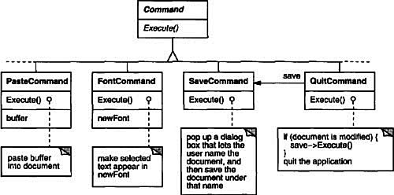
Now MenuItem can store a Command object that encapsulates a request (Figure 2.12). We give each menu item object an instance of the Command subclass that’s suitable for that menu item, just as we specify the text to appear in the menu item. When a user chooses a particular menu item, the MenuItem simply calls Execute on its Command object to carry out the request. Note that buttons and other widgets can use commands in the same way menu items do.
Figure 2.12: MenuItem-Command relationship

Undo/redo is an important capability in interactive applications. To undo and redo commands, we add an Unexecute operation to Command’s interface. Unexecute reverses the effects of a preceding Execute operation using whatever undo information Execute stored. In the case of a FontCommand, for example, the Execute operation would store the range of text affected by the font change along with the original font(s). FontCommand’s Unexecute operation would restore the range of text to its original font(s).
Sometimes undoability must be determined at run-time. A request to change the font of a selection does nothing if the text already appears in that font. Suppose the user selects some text and then requests a spurious font change. What should be the result of a subsequent undo request? Should a meaningless change cause the undo request to do something equally meaningless? Probably not. If the user repeats the spurious font change several times, he shouldn’t have to perform exactly the same number of undo operations to get back to the last meaningful operation. If the net effect of executing a command was nothing, then there’s no need for a corresponding undo request.
So to determine if a command is undoable, we add an abstract Reversible operation to the Command interface. Reversible returns a Boolean value. Subclasses can redefine this operation to return true or false based on run-time criteria.
The final step in supporting arbitrary-level undo and redo is to define a command history, or list of commands that have been executed (or unexecuted, if some commands have been undone). Conceptually, the command history looks like this:
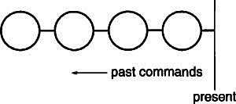
Each circle represents a Command object. In this case the user has issued four commands. The leftmost command was issued first, followed by the second-leftmost, and so on until the most recently issued command, which is rightmost. The line marked “present” keeps track of the most recently executed (and unexecuted) command.
To undo the last command, we simply call Unexecute on the most recent command:
After unexecuting the command, we move the “present” line one command to the left. If the user chooses undo again, the next-most recently issued command will be undone in the same way, and we’re left in the state depicted here:
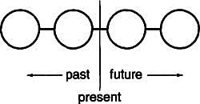
You can see that by simply repeating this procedure we get multiple levels of undo. The number of levels is limited only by the length of the command history.
To redo a command that’s just been undone, we do the same thing in reverse. Commands to the right of the present line are commands that may be redone in the future. To redo the last undone command, we call Execute on the command to the right of the present line:
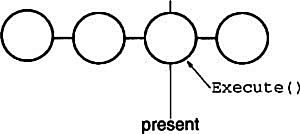
Then we advance the present line so that a subsequent redo will call redo on the following command in the future.
Of course, if the subsequent operation is not another redo but an undo, then the command to the left of the present line will be undone. Thus the user can effectively go back and forth in time as needed to recover from errors.
Lexi’s commands are an application of the Command (233) pattern, which describes how to encapsulate a request. The Command pattern prescribes a uniform interface for issuing requests that lets you configure clients to handle different requests. The interface shields clients from the request’s implementation. A command may delegate all, part, or none of the request’s implementation to other objects. This is perfect for applications like Lexi that must provide centralized access to functionality scattered throughout the application. The pattern also discusses undo and redo mechanisms built on the basic Command interface.
The last design problem involves textual analysis, specifically checking for misspellings and introducing hyphenation points where needed for good formatting.
The constraints here are similar to those we had for the formatting design problem in Section 2.3. As was the case for linebreaking strategies, there’s more than one way to check spelling and compute hyphenation points. So here too we want to support multiple algorithms. A diverse set of algorithms can provide a choice of space/time/quality trade-offs. We should make it easy to add new algorithms as well.
We also want to avoid wiring this functionality into the document structure. This goal is even more important here than it was in the formatting case, because spelling checking and hyphenation are just two of potentially many kinds of analyses we may want Lexi to support. Inevitably we’ll want to expand Lexi’s analytical abilities over time. We might add searching, word counting, a calculation facility for adding up tabular values, grammar checking, and so forth. But we don’t want to change the Glyph class and all its subclasses every time we introduce new functionality of this sort.
There are actually two pieces to this puzzle: (1) accessing the information to be analyzed, which we have scattered over the glyphs in the document structure, and (2) doing the analysis. We’ll look at these two pieces separately.
Many kinds of analysis require examining the text character by character. The text we need to analyze is scattered throughout a hierarchical structure of glyph objects. To examine text in such a structure, we need an access mechanism that has knowledge about the data structures in which objects are stored. Some glyphs might store their children in linked lists, others might use arrays, and still others might use more esoteric data structures. Our access mechanism must be able to handle all of these possibilities.
An added complication is that different analyses access information in different ways. Most analyses will traverse the text from beginning to end. But some do the opposite—a reverse search, for example, needs to progress through the text backward rather than forward. Evaluating algebraic expressions could require an inorder traversal.
So our access mechanism must accommodate differing data structures, and we must support different kinds of traversals, such as preorder, postorder, and inorder.
Right now our glyph interface uses an integer index to let clients refer to children. Although that might be reasonable for glyph classes that store their children in an array, it may be inefficient for glyphs that use a linked list. An important role of the glyph abstraction is to hide the data structure in which children are stored. That way we can change the data structure a glyph class uses without affecting other classes.
Therefore only the glyph can know the data structure it uses. A corollary is that the glyph interface shouldn’t be biased toward one data structure or another. It shouldn’t be better suited to arrays than to linked lists, for example, as it is now.
We can solve this problem and support several different kinds of traversals at the same time. We can put multiple access and traversal capabilities directly in the glyph classes and provide a way to choose among them, perhaps by supplying an enumerated constant as a parameter. The classes pass this parameter around during a traversal to ensure they’re all doing the same kind of traversal. They have to pass around any information they’ve accumulated during traversal.
We might add the following abstract operations to Glyph’s interface to support this approach:
Operations First, Next, and IsDone control the traversal. First initializes the traversal. It takes the kind of traversal as a parameter of type Traversal, an enumerated constant with values such as CHILDREN (to traverse the glyph’s immediate children only), PREORDER (to traverse the entire structure in preorder), POSTORDER, and INORDER. Next advances to the next glyph in the traversal, and IsDone reports whether the traversal is over or not. GetCurrent replaces the Child operation; it accesses the current glyph in the traversal. Insert replaces the old operation; it inserts the given glyph at the current position.
An analysis would use the following C++ code to do a preorder traversal of a glyph structure rooted at g:
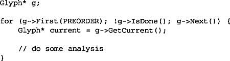
Notice that we’ve banished the integer index from the glyph interface. There’s no longer anything that biases the interface toward one kind of collection or another. We’ve also saved clients from having to implement common kinds of traversals themselves.
But this approach still has problems. For one thing, it can’t support new traversals without either extending the set of enumerated values or adding new operations. Say we wanted to have a variation on preorder traversal that automatically skips non-textual glyphs. We’d have to change the Traversal enumeration to include something like TEXTUAL_PREORDER.
We’d like to avoid changing existing declarations. Putting the traversal mechanism entirely in the Glyph class hierarchy makes it hard to modify or extend without changing lots of classes. It’s also difficult to reuse the mechanism to traverse other kinds of object structures. And we can’t have more than one traversal in progress on a structure.
Once again, a better solution is to encapsulate the concept that varies, in this case the access and traversal mechanisms. We can introduce a class of objects called iterators whose sole purpose is to define different sets of these mechanisms. We can use inheritance to let us access different data structures uniformly and support new kinds of traversals as well. And we won’t have to change glyph interfaces or disturb existing glyph implementations to do it.
We’ll use an abstract class called Iterator to define a general interface for access and traversal. Concrete subclasses like ArrayIterator and ListIterator implement the interface to provide access to arrays and lists, while PreorderIterator, PostorderIterator, and the like implement different traversals on specific structures. Each Iterator subclass has a reference to the structure it traverses. Subclass instances are initialized with this reference when they are created. Figure 2.13 illustrates the Iterator class along with several subclasses. Notice that we’ve added a CreateIterator abstract operation to the Glyph class interface to support iterators.
Figure 2.13: Iterator class and subclasses
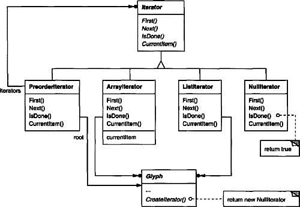
The Iterator interface provides operations First, Next, and IsDone for controlling the traversal. The ListIterator class implements First to point to the first element in the list, and Next advances the iterator to the next item in the list. IsDone returns whether or not the list pointer points beyond the last element in the list. CurrentItem dereferences the iterator to return the glyph it points to. An ArrayIterator class would do similar things but on an array of glyphs.
Now we can access the children of a glyph structure without knowing its representation:
CreateIterator returns a NullIterator instance by default. A NullIterator is a degenerate iterator for glyphs that have no children, that is, leaf glyphs. NullIterator’s IsDone operation always returns true.
A glyph subclass that has children will override CreateIterator to return an instance of a different Iterator subclass. Which subclass depends on the structure that stores the children. If the Row subclass of Glyph stores its children in a list _children, then its CreateIterator operation would look like this:
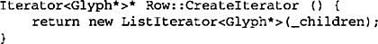
Iterators for preorder and inorder traversals implement their traversals in terms of glyph-specific iterators. The iterators for these traversals are supplied the root glyph in the structure they traverse. They call CreateIterator on the glyphs in the structure and use a stack to keep track of the resulting iterators.
For example, class PreorderIterator gets the iterator from the root glyph, initializes it to point to its first element, and then pushes it onto the stack:
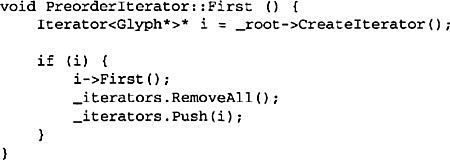
CurrentItem would simply call CurrentItem on the iterator at the top of the stack:
The Next operation gets the top iterator on the stack and asks its current item to create an iterator, in an effort to descend the glyph structure as far as possible (this is a preorder traversal, after all). Next sets the new iterator to the first item in the traversal and pushes it on the stack. Then Next tests the latest iterator; if its IsDone operation returns true, then we’ve finished traversing the current subtree (or leaf) in the traversal. In that case, Next pops the top iterator off the stack and repeats this process until it finds the next incomplete traversal, if there is one; if not, then we have finished traversing the structure.
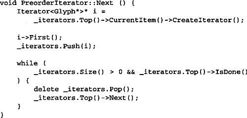
Notice how the Iterator class hierarchy lets us add new kinds of traversals without modifying glyph classes—we simply subclass Iterator and add a new traversal as we have with PreorderIterator. Glyph subclasses use the same interface to give clients access to their children without revealing the underlying data structure they use to store them. Because iterators store their own copy of the state of a traversal, we can carry on multiple traversals simultaneously, even on the same structure. And though our traversals have been over glyph structures in this example, there’s no reason we can’t parameterize a class like PreorderIterator by the type of object in the structure. We’d use templates to do that in C++. Then we can reuse the machinery in PreorderIterator to traverse other structures.
The Iterator (257) pattern captures these techniques for supporting access and traversal over object structures. It’s applicable not only to composite structures but to collections as well. It abstracts the traversal algorithm and shields clients from the internal structure of the objects they traverse. The Iterator pattern illustrates once more how encapsulating the concept that varies helps us gain flexibility and reusability. Even so, the problem of iteration has surprising depth, and the Iterator pattern covers many more nuances and trade-offs than we’ve considered here.
Now that we have a way of traversing the glyph structure, we need to check the spelling and do the hyphenation. Both analyses involve accumulating information during the traversal.
First we have to decide where to put the responsibility for analysis. We could put it in the Iterator classes, thereby making analysis an integral part of traversal. But we get more flexibility and potential for reuse if we distinguish between the traversal and the actions performed during traversal. That’s because different analyses often require the same kind of traversal. Hence we can reuse the same set of iterators for different analyses. For example, preorder traversal is common to many analyses, including spelling checking, hyphenation, forward search, and word count.
So analysis and traversal should be separate. Where else can we put the responsibility for analysis? We know there are many kinds of analyses we might want to do. Each analysis will do different things at different points in the traversal. Some glyphs are more significant than others depending on the kind of analysis. If we’re checking spelling or hyphenating, we want to consider character glyphs and not graphical ones like lines and bitmapped images. If we’re making color separations, we’d want to consider visible glyphs and not invisible ones. Inevitably, different analyses will analyze different glyphs.
Therefore a given analysis must be able to distinguish different kinds of glyphs. An obvious approach is to put the analytical capability into the glyph classes themselves. For each analysis we can add one or more abstract operations to the Glyph class and have subclasses implement them in accordance with the role they play in the analysis.
But the trouble with that approach is that we’ll have to change every glyph class whenever we add a new kind of analysis. We can ease this problem in some cases: If only a few classes participate in the analysis, or if most classes do the analysis the same way, then we can supply a default implementation for the abstract operation in the Glyph class. The default operation would cover the common case. Thus we’d limit changes to just the Glyph class and those subclasses that deviate from the norm.
Yet even if a default implementation reduces the number of changes, an insidious problem remains: Glyph’s interface expands with every new analytical capability. Over time the analytical operations will start to obscure the basic Glyph interface. It becomes hard to see that a glyph’s main purpose is to define and structure objects that have appearance and shape—that interface gets lost in the noise.
From all indications, we need to encapsulate the analysis in a separate object, much like we’ve done many times before. We could put the machinery for a given analysis into its own class. We could use an instance of this class in conjunction with an appropriate iterator. The iterator would “carry” the instance to each glyph in the structure. The analysis object could then perform a piece of the analysis at each point in the traversal. The analyzer accumulates information of interest (characters in this case) as the traversal proceeds:
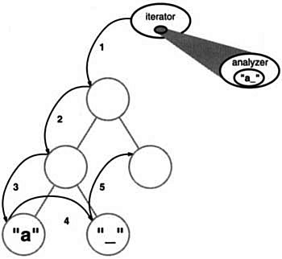
The fundamental question with this approach is how the analysis object distinguishes different kinds of glyphs without resorting to type tests or downcasts. We don’t want a SpellingChecker class to include (pseudo)code like
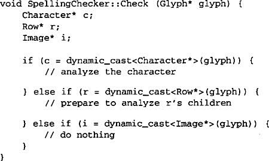
This code is pretty ugly. It relies on fairly esoteric capabilities like type-safe casts. It’s hard to extend as well. We’ll have to remember to change the body of this function whenever we change the Glyph class hierarchy. In fact, this is the kind of code that object-oriented languages were intended to eliminate.
We want to avoid such a brute-force approach, but how? Let’s consider what happens when we add the following abstract operation to the Glyph class:
void CheckMe(SpellingChecker&)
We define CheckMe in every Glyph subclass as follows:
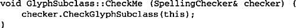
where GlyphSubclass would be replaced by the name of the glyph subclass. Note that when CheckMe is called, the specific Glyph subclass is known—after all, we’re in one of its operations. In turn, the SpellingChecker class interface includes an operation like CheckGlyphSubclass for every Glyph subclass10:
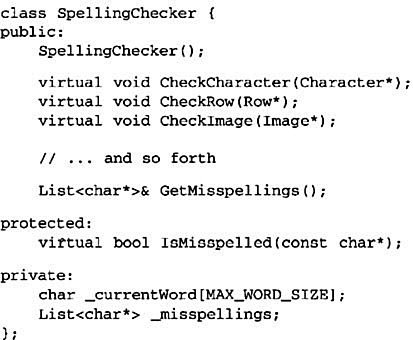
SpellingChecker’s checking operation for Character glyphs might look something like this:
Notice we’ve defined a special GetCharCode operation on just the Character class. The spelling checker can deal with subclass-specific operations without resorting to type tests or casts—it lets us treat objects specially.
CheckCharacter accumulates alphabetic characters into the _currentWord buffer. When it encounters a nonalphabetic character, such as an underscore, it uses the IsMisspelled operation to check the spelling of the word in _currentWord.11 If the word is misspelled, then CheckCharacter adds the word to the list of misspelled words. Then it must clear out the _currentWord buffer to ready it for the next word. When the traversal is over, you can retrieve the list of misspelled words with the GetMisspellings operation.
Now we can traverse the glyph structure, calling CheckMe on each glyph with the spelling checker as an argument. This effectively identifies each glyph to the SpellingChecker and prompts the checker to do the next increment in the spelling check.
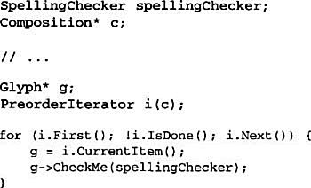
The following interaction diagram illustrates how Character glyphs and the SpellingChecker object work together:
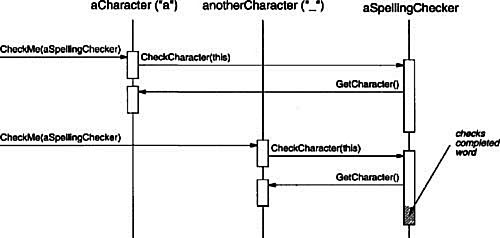
This approach works for finding spelling errors, but how does it help us support multiple kinds of analysis? It looks like we have to add an operation like CheckMe(SpellingChecker&) to Glyph and its subclasses whenever we add a new kind of analysis. That’s true if we insist on an independent class for every analysis. But there’s no reason why we can’t give all analysis classes the same interface. Doing so lets us use them polymorphically. That means we can replace analysis-specific operations like CheckMe(SpellingChecker&) with an analysis-independent operation that takes a more general parameter.
We’ll use the term visitor to refer generally to classes of objects that “visit” other objects during a traversal and do something appropriate.12 In this case we can define a Visitor class that defines an abstract interface for visiting glyphs in a structure.
Concrete subclasses of Visitor perform different analyses. For example, we could have a SpellingCheckingVisitor subclass for checking spelling, and a HyphenationVisitor subclass for hyphenation. SpellingCheckingVisitor would be implemented exactly as we implemented SpellingChecker above, except the operation names would reflect the more general Visitor interface. For example, CheckCharacter would be called VisitCharacter.
Since CheckMe isn’t appropriate for visitors that don’t check anything, we’ll give it a more general name: Accept. Its argument must also change to take a Visitor&, reflecting the fact that it can accept any visitor. Now adding a new analysis requires just defining a new subclass of Visitor—we don’t have to touch any of the glyph classes. We support all future analyses by adding this one operation to Glyph and its subclasses.
We’ve already seen how spelling checking works. We use a similar approach in HyphenationVisitor to accumulate text. But once HyphenationVisitor’s VisitCharacter operation has assembled an entire word, it works a little differently. Instead of checking the word for misspelling, it applies a hyphenation algorithm to determine the potential hyphenation points in the word, if any. Then at each hyphenation point, it inserts a discretionary glyph into the composition. Discretionary glyphs are instances of Discretionary, a subclass of Glyph.
A discretionary glyph has one of two possible appearances depending on whether or not it is the last character on a line. If it’s the last character, then the discretionary looks like a hyphen; if it’s not at the end of a line, then the discretionary has no appearance whatsoever. The discretionary checks its parent (a Row object) to see if it is the last child. The discretionary makes this check whenever it’s called on to draw itself or calculate its boundaries. The formatting strategy treats discretionaries the same as whitespace, making them candidates for ending a line. The following diagram shows how an embedded discretionary can appear.
What we’ve described here is an application of the Visitor (331) pattern. The Visitor class and its subclasses described earlier are the key participants in the pattern. The Visitor pattern captures the technique we’ve used to allow an open-ended number of analyses of glyph structures without having to change the glyph classes themselves. Another nice feature of visitors is that they can be applied not just to composites like our glyph structures but to any object structure. That includes sets, lists, even directed-acyclic graphs. Furthermore, the classes that a visitor can visit needn’t be related to each other through a common parent class. That means visitors can work across class hierarchies.
An important question to ask yourself before applying the Visitor pattern is, Which class hierarchies change most often? The pattern is most suitable when you want to be able to do a variety of different things to objects that have a stable class structure. Adding a new kind of visitor requires no change to that class structure, which is especially important when the class structure is large. But whenever you add a subclass to the structure, you’ll also have to update all your visitor interfaces to include a Visit... operation for that subclass. In our example that means adding a new Glyph subclass called Foo will require changing Visitor and all its subclasses to include a VisitFoo operation. But given our design constraints, we’re much more likely to add a new kind of analysis to Lexi than a new kind of Glyph. So the Visitor pattern is well-suited to our needs.
We’ve applied eight different patterns to Lexi’s design:
1. Composite (163) to represent the document’s physical structure,
2. Strategy (315) to allow different formatting algorithms,
3. Decorator (175) for embellishing the user interface,
4. Abstract Factory (87) for supporting multiple look-and-feel standards,
5. Bridge (151) to allow multiple windowing platforms,
6. Command (233) for undoable user operations,
7. Iterator (257) for accessing and traversing object structures, and
8. Visitor (331) for allowing an open-ended number of analytical capabilities without complicating the document structure’s implementation.
None of these design issues is limited to document editing applications like Lexi. Indeed, most nontrivial applications will have occasion to use many of these patterns, though perhaps to do different things. A financial analysis application might use Composite to define investment portfolios made up of subportfolios and accounts of different sorts. A compiler might use the Strategy pattern to allow different register allocation schemes for different target machines. Applications with a graphical user interface will probably apply at least Decorator and Command just as we have here.
While we’ve covered several major problems in Lexi’s design, there are lots of others we haven’t discussed. Then again, this book describes more than just the eight patterns we’ve used here. So as you study the remaining patterns, think about how you might use each one in Lexi. Or better yet, think about using them in your own designs!